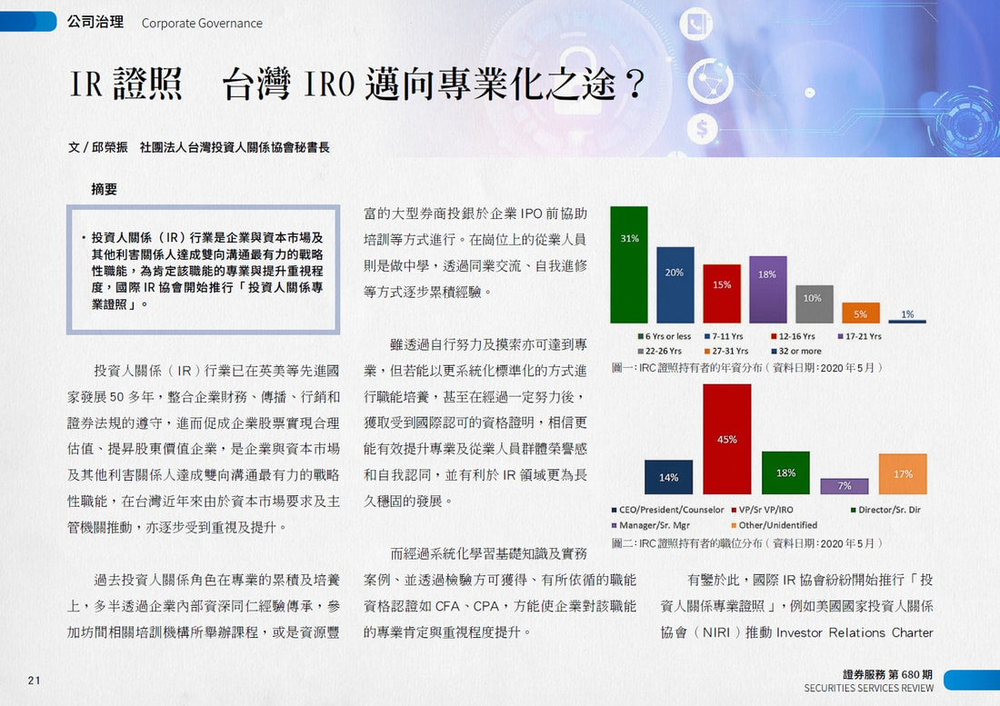
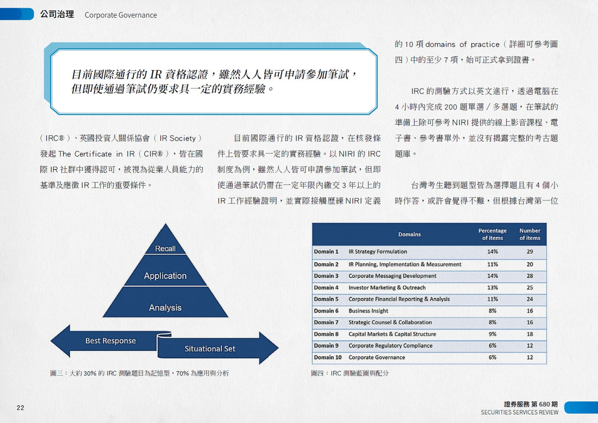
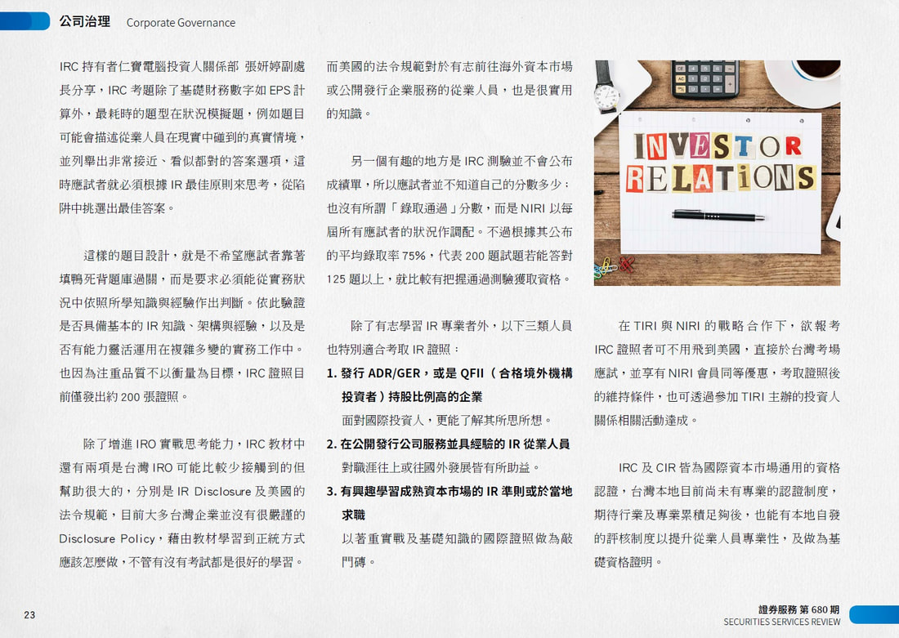
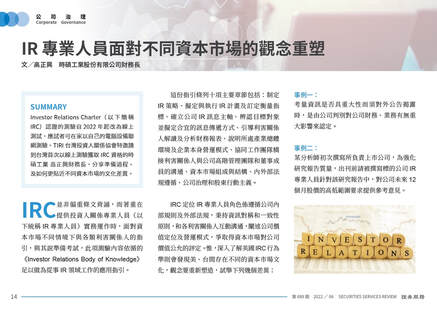
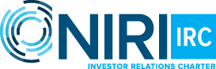

(IRC)® 專業認證
美國投資人關係協會（National Investor Relations Institute, NIRI）專業認證，TIRI會員報名享專屬折扣 US$200
IRC Certification
IRC®（Investor Relations Charter）是由美國投資人關係協會（NIRI）推出的國際投資人關係專業認證，旨在驗證 IR 專業人士在財務、策略、溝通、資本市場及公司治理等領域的專業知識與實務能力。TIRI 與 NIRI 合作推動 IR 專業發展，TIRI 會員報考 IRC® 可享 US$200 專屬報名優惠。



目標與益處
如何取得 IRC®
NIRI目前提供兩種取得 IRC® 的途徑：
考試與報考資格
不具下列經驗者同樣可參加考試：報名時選擇「IRC Candidates」，並於通過筆試後 4 年內繳交最少 3 年的 IR 工作經驗證明即可。
考試時間：IRC Exam 為3小時線上測驗，NIRI目前公布之 Exam Blueprint 為160題。考試內容及最新題數依 NIRI 官方公告為準。
考試方式：採英文電腦測驗，透過線上即時監考（Live Remote Proctoring）方式進行，可依 NIRI 規定預約考試時間。
報考資格：滿足以下教育和專業工作經驗選項之一——
- 美國學士學位或同等學歷（台灣學士學位亦可），具有三年或以上作為 IR 公司專業人士或 IR 顧問的合格全職工作經驗。
- 作為 IR 公司專業人士或 IR 顧問，具有 6 年合格的全職工作經驗。
- 持有與 IR 專業實務相關且有效之專業認證（例如 CPA、CFA），並具至少3年符合資格的全職 IR 工作經驗。
並須具備上市公司相關 IR 實務經驗，以 IR 企業專業人士或 IR 顧問身分，在 IR Competency Framework 的11個專業領域中，至少具有7個領域的實務經驗。
報名方式與費用
申請日期：隨時
考試日期：完成註冊及資格確認後，可於接下來兩個月內自行安排考試時間。
最新報考資訊及考試流程
IRC® 報考資格、考試方式、費用及相關規定可能依 NIRI 最新政策調整。建議申請前先至 NIRI 官方網站確認最新資訊，再依官方指引進行申請。
IRC Certification Program- 線上申請
至 NIRI 官方 IRC Certification Program 頁面確認最新報考資格與考試資訊，點選 「Apply for the IRC Exam」 進行線上申請。
- 資格確認
完成註冊後，申請人將收到 NIRI 寄發的初步資格確認電子郵件。
- 取得考試授權
資格確認後，申請人將收到考試機構寄發的考試授權電子郵件，內容包含考試預約方式及線上考試所需的技術要求。
- 自行安排考試時間
取得考試授權後，可於註冊後 兩個月內自行選擇合適的考試日期與時間，無須於完成註冊後立即應試。
- 收到考試確認
完成預約後，考試機構將寄發確認電子郵件，提供確切考試時間、應試方式及相關注意事項。
考前準備
IRC® Exam 以 IR 專業實務與 IR Competency Framework 為基礎。考生可依自身專業經驗與學習需求，參考 NIRI 提供的相關資源進行準備。
※上述資源供考生依個人需求參考使用；IRC® Exam 相關內容、規定及最新資訊，以 NIRI 官方公告為準。
參考書籍Investor Relations Body of Knowledge, Second Edition（IRBoK 2e）
NIRI 出版之 IR 專業參考書籍，涵蓋 11 項 IR 專業領域。TIRI 會員購買英文原文版可享專屬優惠；TIRI 並獲 NIRI 正式授權推出繁體中文版，如有需求請洽 TIRI 秘書處。
線上學習資源NIRI 提供的線上學習系列，以 IRBoK 為內容基礎，依 IR Competency Framework 專業領域規劃相關學習模組，可作為專業進修及 IRC® Exam 準備資源之一。
了解 IR Competency SuiteIRC® 範例試題可透過 NIRI 提供的 IRC Sample Test 熟悉考試題型與出題方式。
查看 IRC Sample Test證照持有者
經驗分享
IRC® 持有者經驗分享
※以上內容為 IRC® 持有者取得認證時之經驗分享，現行報考資格、考試方式及相關規定請以 NIRI 官方最新公告為準。

IRC® 認證維護
歡迎聯繫本會了解更多資訊：
楊小姐・(02) 2381-9248 #747
office@tiri.tw
IRC® 採三年一期的認證更新制度。持有者每三年須累積至少 30 個專業發展單位（Professional Development Units, PDUs），並完成認證更新程序及繳納相關費用。其中至少 7 個 PDUs 須分別涵蓋 IR Competency Framework 中 7 個不同的專業領域。
參與 TIRI 符合 NIRI PDU 認列規範之專業活動，可依相關規定申報 PDUs。最新續證規定及 PDU 認列方式，請參閱 NIRI 官方資訊。

IRC® 認證獎助金
歡迎符合資格之 IR 專業人士提出申請。
申請流程
-
01提出獎助申請
填寫 TIRI「IRC® 獎助金申請表」，完成申請登記。 -
02取得 IRC®
依 NIRI 現行規定完成 IRC® 認證要求並取得 IRC®。 -
03提交證明
取得 IRC® 後，請將 IRC® 電子認證證明及獎助金匯款所需資料寄至 TIRI 秘書處（office@tiri.tw）。 -
04審核與撥款
經 TIRI 審核確認符合獎助資格後，將新台幣30,000元獎助金匯入申請人指定帳戶；獲獎者並將受邀於 TIRI 年度大會接受表揚。
其他說明
本獎助計畫限臺灣地區申請人申請。獲獎名單將公布於 TIRI 官方網站。
為何選擇 IRC®
IR 專業人士在企業中肩負重要責任，需要具備財務、策略、溝通等多面向的專業能力。取得 IRC®，代表持有者已展現 IR Competency Framework 所涵蓋之必要知識與技能。 NIRI
NIRI 現行 IR Competency Framework 涵蓋11個 IR 專業領域，包括 IR 策略制定、企業訊息發展、投資者市場營銷與拓展、企業財務報告與分析、資本市場與資本結構、企業治理及 ESG 等。取得 IRC® 有助於展現 IR 專業能力與持續專業發展。